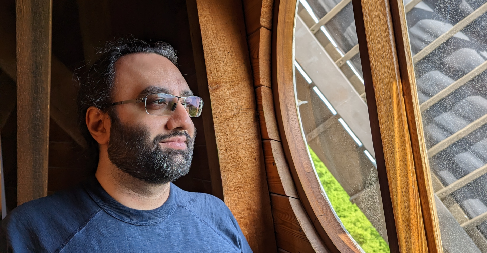

|  |
|
Young Investigator (postdoc) DFG Collaborative Research Center 1114 Artificial Intelligence for the Sciences Group Freie Universität Berlin |
 https://orcid.org/0000-0002-7698-5630
https://orcid.org/0000-0002-7698-5630
|
|
|
Bio
I am a computational biophysicist with a specialization in the modeling and simulation of biological processes at the mesoscopic scale.
My recent work concentrates on biomembranes and their interactions with proteins. This includes the study of how membranes assist proteins in organizing themselves and how proteins influence and reshape membranes.
My research plays a key role in quantitative integrative biology, bridging physics-based predictions with biological observables.
Alongside this, I'm actively engaged in the development of deep learning techniques, which enable the automated analysis of microscopy and tomography imaging data.
For more details and examples, please visit the research section.
Born in Tehran, Iran, I attended Sharif University of Technology, where my academic journey began with mechanical engineering. I later pursued a PhD in computational nanotechnology.
During this phase, my contributions spanned various research areas, ranging from nonlinear mechanical analysis of nanostructures to molecular simulations of nano-confined fluids.
The publications section enumerates my peer-reviewed works across these multifaceted disciplines.
Currently, I reside in Berlin, where I serve as a Young Investigator postdoc at the Free University of Berlin.
I am a photography enthusiast. You can check a selection of my works at my 500px portfolio.
Contact
Email: mohsen.sadeghi [at] fu-berlin.de